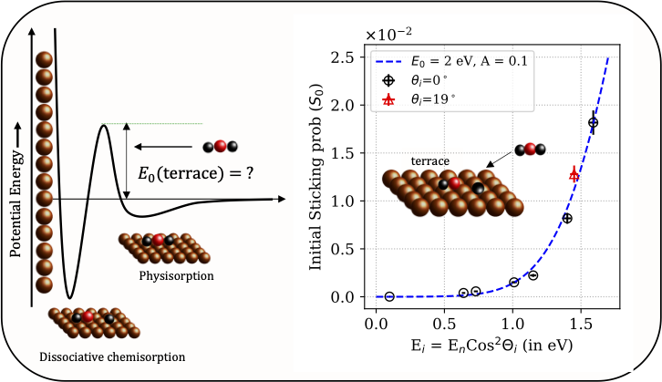
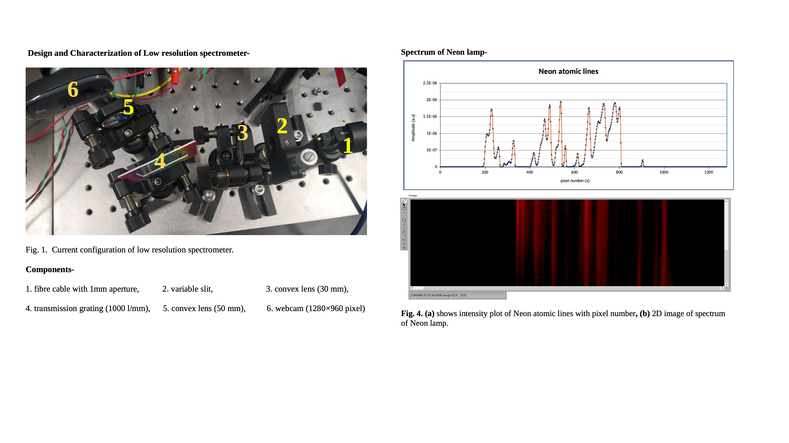
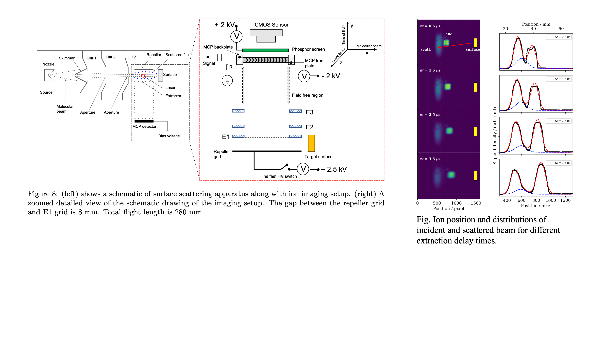
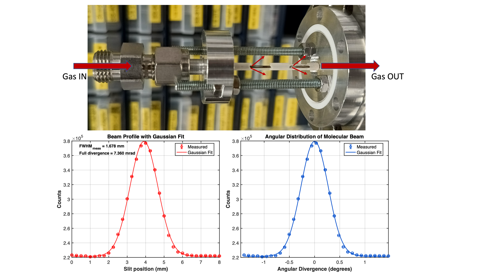

Research Overview

My research is divided into two main areas: CO₂ dissociation on metal surfaces and the development of advanced diagnostic tools for high-precision measurements.
Key Research Impact
- Measured CO₂ dissociation probabilities down to 10⁻⁵
- Identified energy-dependent surface reaction pathways
- Developed MHz-level laser stabilization systems
- Built compact diagnostic tools for surface science
Does CO₂ Dissociate on Low-Index Copper Surfaces?

CO₂ dissociation on Cu surfaces under UHV conditions shows strong dependence on incident energy, molecular orientation, and vibrational excitation.
📄 View PublicationDevelopment of Diagnostic Techniques

Wavemeter
Fizeau interferometer-based high-precision wavelength measurement system.
Publication Link

Transfer Interferometer
MHz-level laser stabilization using interferometric feedback systems.
Publication Link
Spectrometer
Compact high-resolution spectrometer for wavelength and Raman measurements.
Publication Link
Photoacoustic Spectroscopy
Ultra-sensitive detection of weak gas-phase transitions.
Publication Link
